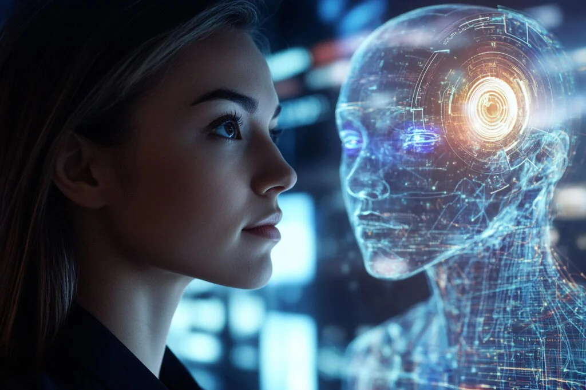
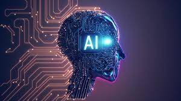

¿Qué es la inteligencia artificial o IA?

La inteligencia artificial (IA) es un conjunto de tecnologías que permiten que las computadoras realicen una variedad de funciones avanzadas, incluida la capacidad de ver, comprender y traducir lenguaje hablado y escrito, analizar datos, hacer recomendaciones y mucho más.
La IA es la columna vertebral de la innovación en la computación moderna, lo que genera valor para las personas y las empresas. Por ejemplo, el reconocimiento óptico de caracteres (OCR) usa la IA para extraer texto y datos de imágenes y documentos, y convierte el contenido no estructurado en datos estructurados listos para las empresas, además de brindar estadísticas valiosas.
Definición de Inteligencia Artificial
La inteligencia artificial es un campo de la ciencia relacionado con la creación de computadoras y máquinas que pueden razonar, aprender y actuar de una manera que normalmente requeriría inteligencia humana o que involucra datos cuya escala excede lo que los humanos pueden analizar.
La IA es un campo amplio que incluye muchas disciplinas, como la informática, el análisis y la estadística de datos, la ingeniería de hardware y software, la lingüística, la neurociencia y hasta la filosofía y la psicología.
A nivel operativo para el uso empresarial, la IA es un conjunto de tecnologías que se basan principalmente en el aprendizaje automático y el aprendizaje profundo, que se usan para el análisis de datos, la generación de predicciones y previsiones, la categorización de objetos, el procesamiento de lenguaje natural, las recomendaciones, la recuperación inteligente de datos y mucho más.
¿Cómo funciona la IA?

Si bien los detalles varían según las diferentes técnicas de IA, el principio central gira en torno a los datos. Los sistemas de IA aprenden y mejoran a través de la exposición a grandes cantidades de datos, lo que permite identificar patrones y relaciones que las personas pueden pasar por alto.
Este proceso de aprendizaje suele implicar algoritmos, que son conjuntos de reglas o instrucciones que guían el análisis y la toma de decisiones de la IA. En el aprendizaje automático, un subconjunto popular de la IA, los algoritmos se entrenan con datos etiquetados o no etiquetados para hacer predicciones o categorizar información.
El aprendizaje profundo, una especialización adicional, utiliza redes neuronales artificiales con varias capas para procesar información, imitando la estructura y la función del cerebro humano. A través del aprendizaje y la adaptación continuos, los sistemas de IA se vuelven cada vez más hábiles en la realización de tareas específicas, desde el reconocimiento de imágenes hasta la traducción de idiomas y más.
Tipos de inteligencia artificial
La inteligencia artificial se puede organizar de varias maneras, según las etapas de desarrollo o las acciones que se están realizando.
Por ejemplo, se suelen reconocer cuatro etapas de desarrollo de la IA.
Máquinas reactivas: IA limitada que solo reacciona a diferentes tipos de estímulos basados en reglas preprogramadas. No usa memoria y, por lo tanto, no puede aprender con datos nuevos. Deep Blue de IBM, que venció al campeón de ajedrez Garry Kasparov en 1997, fue un ejemplo de una máquina reactiva.
Memoria limitada: Se considera que la mayor parte de la IA moderna es de memoria limitada. Puede usar la memoria para mejorar con el tiempo mediante el entrenamiento con datos nuevos, por lo general, a través de una red neuronal artificial o algún otro modelo de entrenamiento. El aprendizaje profundo, un subconjunto del aprendizaje automático, se considera inteligencia artificial con memoria limitada.
Teoría de la mente: En la actualidad no existe IA con teoría de la mente, pero se están investigando distintas posibilidades. El término hace referencia a la IA que puede emular la mente humana y tiene capacidades de toma de decisiones similares a las de un ser humano, lo cual incluye reconocer y recordar emociones, y reaccionar en situaciones sociales como lo haría un ser humano.
Autoconocimiento: Un paso más allá de la IA con teoría de la mente, el concepto de IA con autoconocimiento describe una máquina mítica que tiene conocimiento de su propia existencia y tiene las capacidades intelectuales y emocionales de un ser humano. Al igual que la IA con teoría de la mente, la IA con autoconciencia no existe en la actualidad.
Una forma más útil de categorizar ampliamente los tipos de inteligencia artificial es según lo que puede hacer la máquina. Todo lo que llamamos inteligencia artificial actualmente se considera inteligencia “estrecha” porque solo puede realizar un conjunto reducido de acciones en función de su programación y entrenamiento. Por ejemplo, un algoritmo de IA que se use para la clasificación de objetos no podrá realizar procesamiento de lenguaje natural. La Búsqueda de Google es una forma de IA estrecha, al igual que las estadísticas predictivas o los asistentes virtuales.
La inteligencia artificial general (AGI) sería la capacidad de una máquina de "sentir, pensar y actuar" como lo haría una persona. La AGI no existe actualmente. El siguiente nivel sería la superinteligencia artificial (ASI), en la que la máquina podría funcionar de manera superior a la humana en todo aspecto.